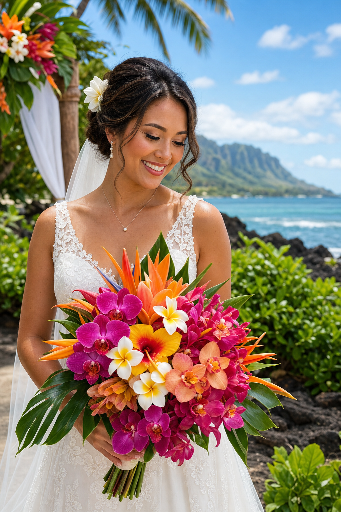

Hawaii weddings are unlike any other celebration on earth. The air carries the fragrance of plumeria, the ocean provides a breathtaking backdrop, and the flowers — well, the flowers are simply extraordinary. Choosing the right tropical blooms for your Hawaiian wedding can make the difference between a beautiful event and an unforgettable one.
Pikake (Jasmine sambac)
Our studio's namesake, pikake is the most beloved wedding flower in Hawaii. Named after the Hawaiian word for peacock (the birds were kept in the same garden as the jasmine at Princess Kaiulani's estate), pikake has an intoxicating, sweet fragrance. It's traditionally used in bridal lei, floral crowns, and hair adornments. Its small white blossoms are delicate yet stunning in photographs. We recommend pikake lei for the bride, mother of the bride, and any honored guests at a traditional Hawaiian ceremony.
Orchids
Orchids are perhaps the most versatile wedding flower in Hawaii. Dendrobium orchids cascade beautifully in bouquets, while cymbidium orchids make dramatic centerpieces. Vanda orchids, with their rich purple or blue tones, are particularly striking in tropical arrangements. The great advantage of orchids is their longevity — they'll look fresh all day in Hawaii's humidity, unlike some delicate mainland flowers that wilt quickly.
Anthurium
Hawaii's state flower is the yellow hibiscus, but anthuriums are perhaps our most iconic export. These heart-shaped blooms in red, orange, pink, and white bring a bold, sculptural quality to wedding arrangements. They're particularly stunning in reception centerpieces paired with tropical foliage like ti leaves and bird of paradise.
Plumeria
No Hawaii wedding is complete without plumeria. These fragrant, five-petaled flowers come in white, yellow, pink, and multi-colored varieties. They're ideal for lei, boutonnieres, corsages, and hair adornments. Their slightly waxy texture makes them hold up well throughout a wedding day.
Bird of Paradise
For couples wanting dramatic, statement florals, bird of paradise (Strelitzia) is unmatched. These striking orange and blue blooms stand tall in ceremony arrangements and make incredible altar pieces for outdoor beach weddings. They pair beautifully with tropical greenery and palm fronds.
When planning your Hawaiian wedding flowers, we always recommend scheduling a consultation at least three to six months in advance, especially for peak wedding season (May through September). This ensures we can source the specific blooms you love and design cohesive arrangements that tell your unique love story.